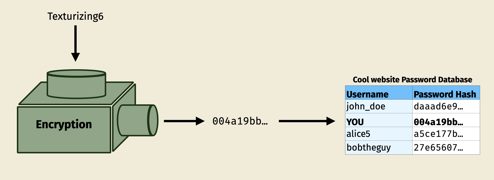

Most password advice you're used to seeing is decades old. In the years since, the bad guys have gotten a lot better at trying to "crack" a stolen password.
Let's take a trip through a bunch of password styles and see how strong (or weak) they are. Each pixel in a bar will represent one second* of time spent by the bad guys trying to guess your password before they get it for sure.
Scroll →
*Assuming a single RTX-4090 graphics card cracking PostgreSQL SCRAM-SHA-256 hashes.
In other words, the good guys have pretty strong encryption, but the bad guys have a decently strong machine guessing passwords.
123456
It turns out choosing things we'll remember is hard, so we often pick common things like "password" or "123456" or "football" or "qwerty" as passwords. Unfortunately, a lot of people do this. Our bad guys happen to have a list of these commonly-used passwords, so the first thing they'll try is to guess all of them in order.
It's a bit like a house robber checking under the doormat or the flowerpot for the key. So many people hide their key there that you can get in really easily with the same check.
Oh, and this list is only 14 million passwords long (yes, that's a small number). There are even bigger ones with even more words that people have used before on them. So, if your password is the name of a thing you like or based on keys that are next to each other on the keyboard, it's probably on one of those lists. Best to avoid it.
Clearly, this won't stop the bad guys from breaking in. Let's choose a more uncommon word...
texturizing
The OED, that's a large and well respected dictionary. And this is a long word, so it should be better, right? Well, not exactly.
When making accounts, the password form will probably say to make sure your password is at least 8 characters long:
This isn't bad advice! But our bad guys aren't going to waste time guessing every possible combination of 8 letters. Surely the passwords are words, right? So they'll grab a list of English words and guess each one in order too. Unfortunately, the Oxford dictionary is pretty short compared to the earlier list of passwords, so the bad guys can check all of these really quickly too.
There are some ways we can make this stronger. Those password entry forms always tell us to add capital letters too. Let's try that!
Texturizing
We need to make sure we can remember our password as we make it stronger. It'll be easiest to remember where the capital letter is if we make it the first one.
But considering how fast the bad guys got through the earlier dictionary, this won't slow them down much. They just have to guess each capitalized word right after the original version. While we could capitalize some other letter, they could guess all of those pretty quickly too, so there's not much point.
The form earlier asked for a number, too. Let's add one...
Texturizing6
The digit helped a lot more. We're back at where we were with the common password list. Though it's still only 6 seconds, so we can do better.
I should probably explain why the hackers don't already have our password if they broke in.
Our password is encrypted before being stored in the website's database. It's a one-way code, so it can't be decrypted. The only way to find out the password is to encrypt a word and see if it matches. This is also how the website know it's you when you log in: they encrypt the password you typed, then look at what's in the database. If it's a match, they let you in.
Our hackers stole this database, but they can't turn the encrypted passwords back into words. The only way for them to figure it out is for them to use a computer to make as many guesses as possible and see if any of them match anyone's accounts. If they figure it out, they can log in and pretend to be you! Or worse, they might try your username and password on other websites to see if it lets them in there too. For this reason, you should also avoid using the same password in multiple places.
The longer it takes the bad guys to guess your password, the more time we have to log in and change our password. That way, even if they do figure it out, it won't get them in anymore. To use the house analogy again, if you discover that someone's stolen your key, you get the locks changed right away.
We wanted to do better than the common password list. Numbers seemed to help, so lets add more of them.
Textur1zing6
Aha, we can replace the "i"s with "1"s or "e" with "3". That's clever, right?
It does seem to help, but clever as it seems, the bad guys are also clever and will tell their computers to try these kinds of tricks too. More numbers, then?
Note: the exact amount of time this buys us will depend on the word we use. The more letters that look like numbers, the more things the bad guys have to try.
Textur1zing1996
As long as it's not your birth year, a four-number string will be good. Of course, the hackers probably got a lot of other things along with your encrypted password, including your name and date of birth. They can easily program their computer to try your birthday on the end of the word too.
Adding more numbers might be too much to remember. But the website's did ask for a special character, too. We can handle a special character as well...
Textur1zing1996*
What counts as a "special character" anyway? Different websites have different opinions. I'm going with !@#$%^&* — just 8 characters, but every website will agree that they're special. The more kinds of special characters allowed, the more time adding one buys us.
We could keep adding more special characters and numbers to this, but at this rate we're never going to remember our final password. We need a different approach.
!6!Tx%
That number and special character advice from earlier makes a lot more sense if we allow ourselves to use random gobbledygook as a password. To guess this, the bad guys can't use the dictionary as a starting place, so they'd have to try every single combination of six characters.
And to think: if we went longer, we could do even better than this! Going up to 8 characters gets you over 8 years of time before they find your password (unless they get lucky). Not bad!
That said, this is for a scenario where the website the hackers broke into had strong encryption. If the website is using a weaker scheme, or if the bad guys buy more computers, they could break this much faster. 8 years could end up being more like 3 hours.
We don't know how good the website we're making an account on is, nor do we know how wealthy the hackers are. Better safe than sorry, so we should still try to make something stronger.
The other issue is that something like this is pretty impossible to remember. Writing down passwords is probably a bad idea in case someone finds it and reads it, so we don't want to do that either.
Luckily, there's a way to make a password that's both way stronger than this and easy to remember. I'll show you...
Backache Outclass Drizzle Five Tapestry Cover
Scroll →
That was one week just now. Each big tick mark down there is one day.
Two weeks. Take a look at your scroll bar. Hasn't moved, has it?
When we want to make our password stronger, we need to make the bad guys guess as many things as possible. It just turns out that, even on the short list of words, there are more words to guess than there are possible numbers.
Since it's more than one word, these are called "passphrases".
And, since words are easier to remember than numbers, it's way easier to remember six words than a bunch of numbers or special characters.
Unfortunately, that makes forms like this dangerous. Requiring numbers and special characters suggests this helps make the password stronger, even though a second word would do so much more.
Even worse, some forms won't let you put in a long password! If you run into these, it's better to use a random gobbledygook password like from earlier, and lock it in a password manager using a six-word phrase. I recommend Bitwarden. Go as long as possible with those.
For the web application devs out there, you should use a password system that lets your users make strong passphrases. (Or, better yet, forces them to.)
Making a passphrase from the list above is easy!
All you need is a six-sided die and a pen.
Anyway, you've scrolled about two months so far. Which is not much compared to 3.1 billion years.
I don't have much else to say, but you can keep scrolling if you want. But I'd much rather you spend your time making your passwords better!
Good luck out there, and stay safe.